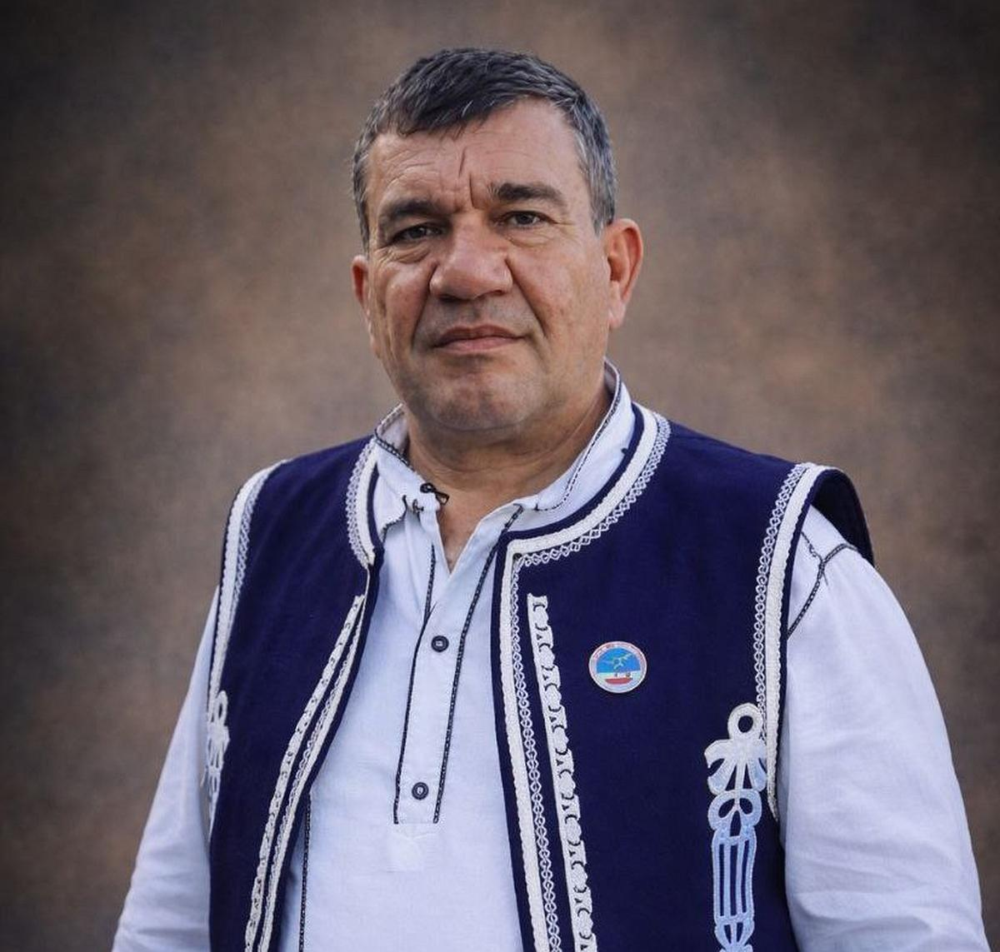
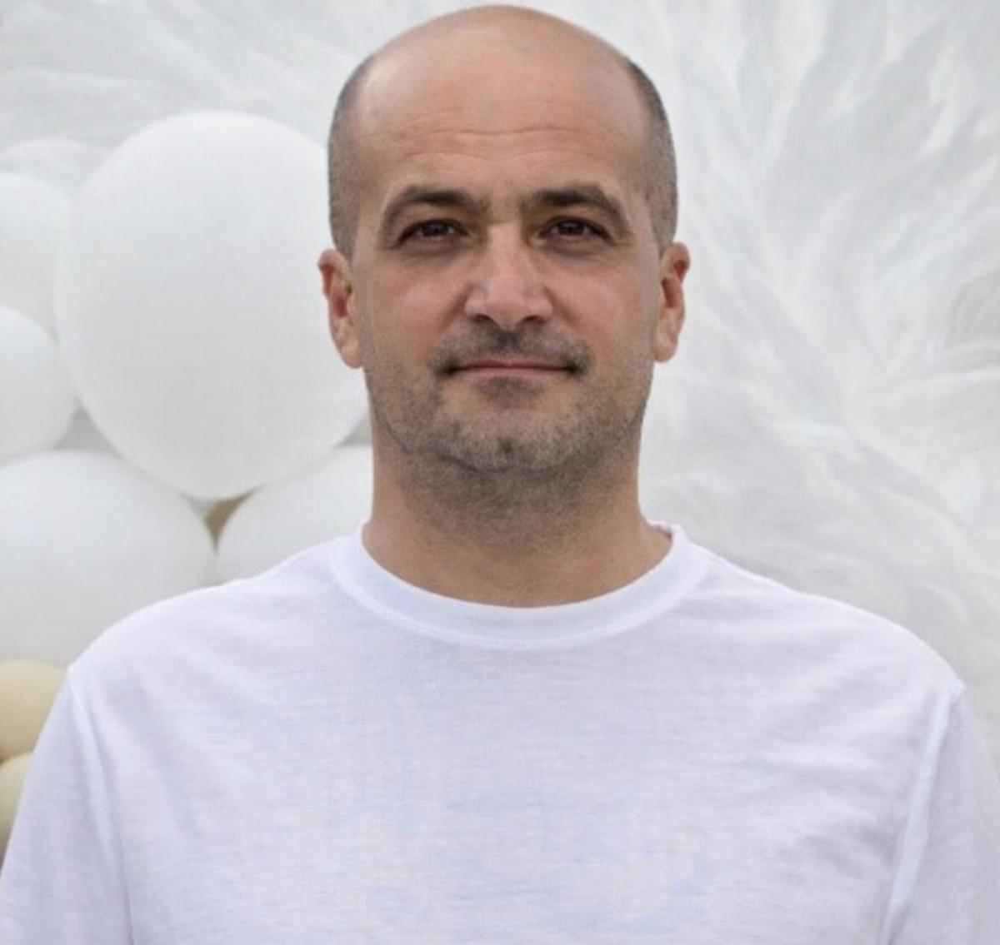
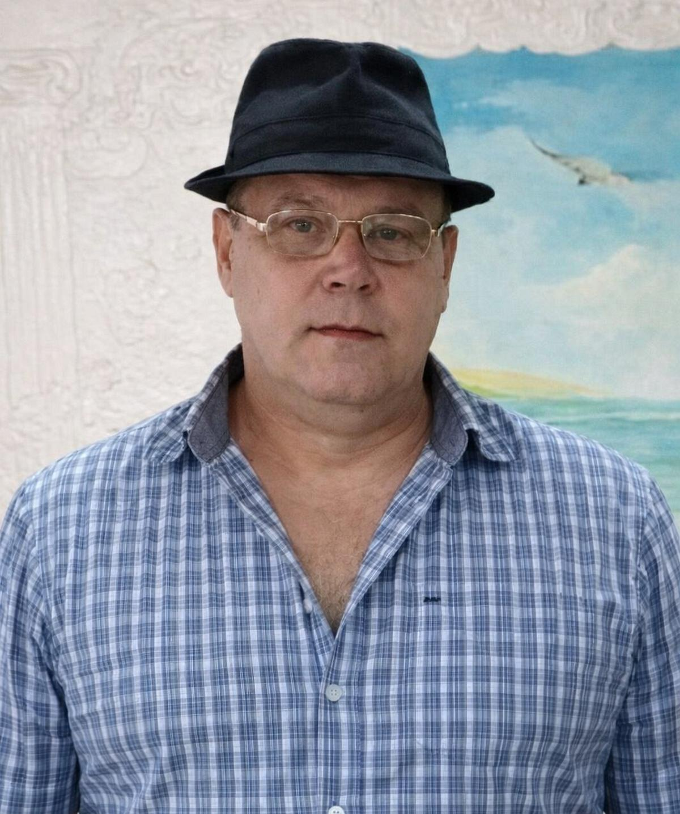
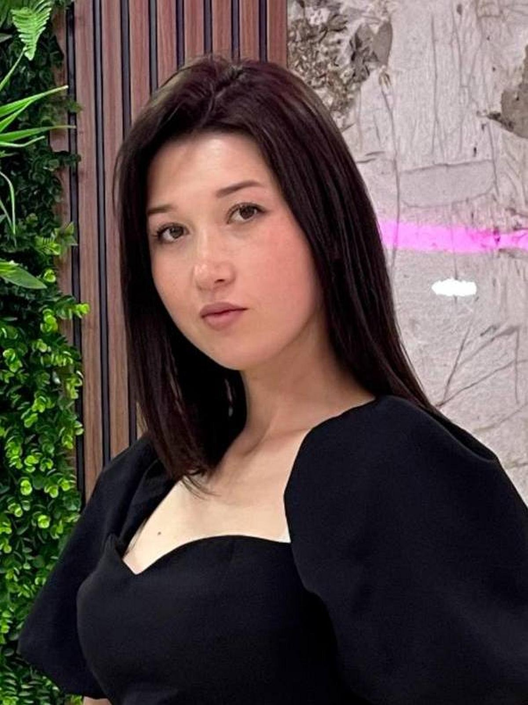
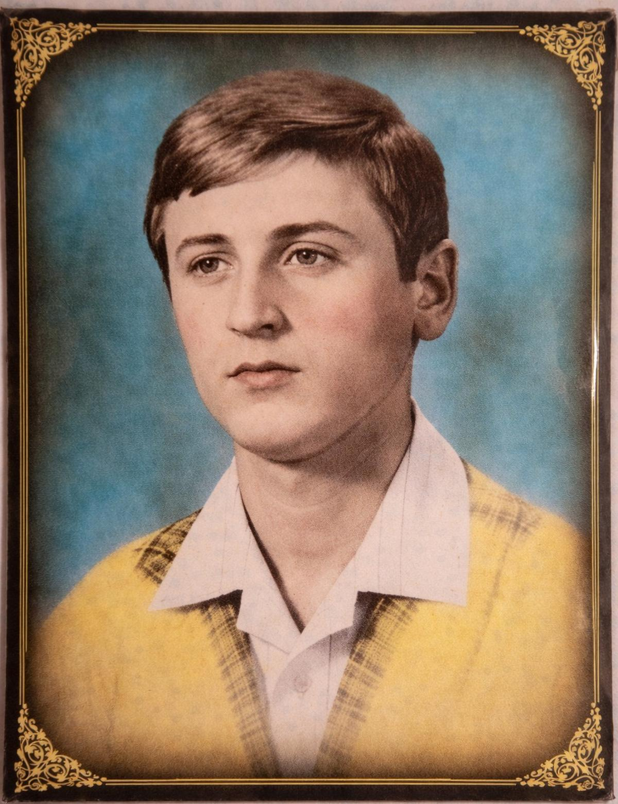
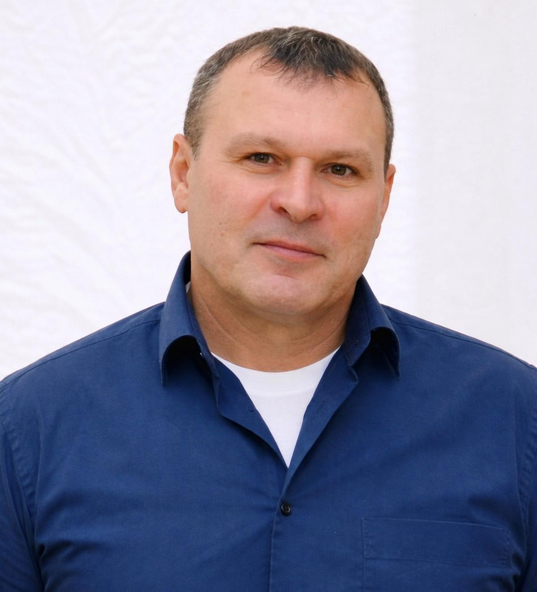
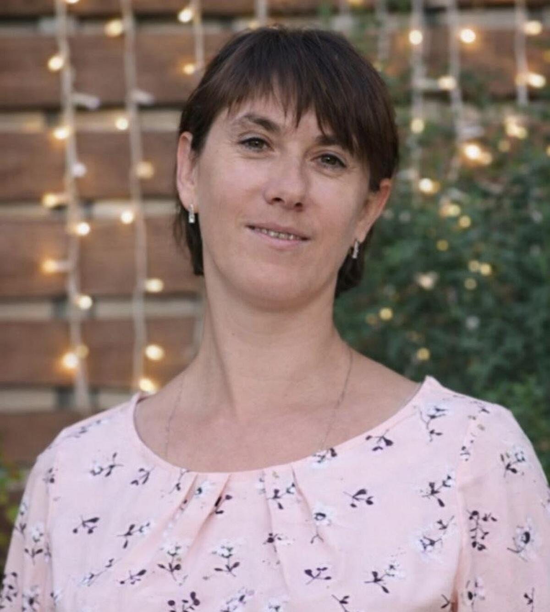
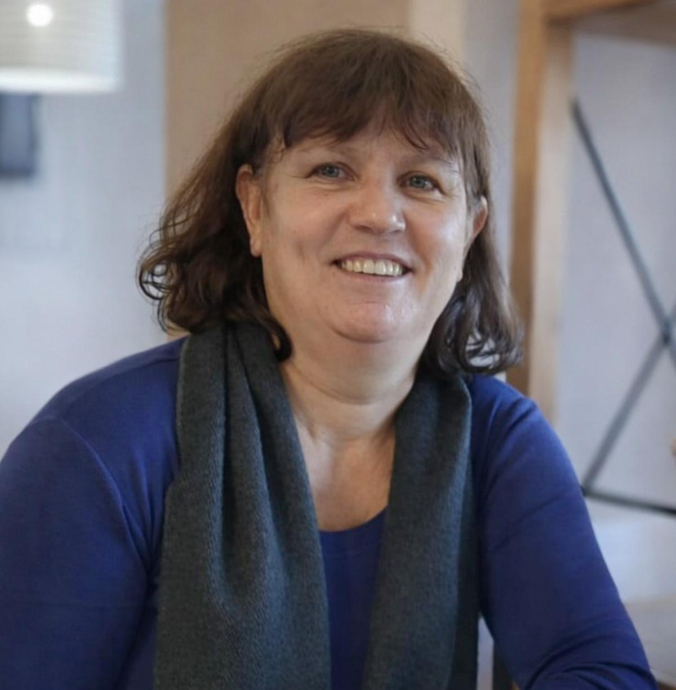
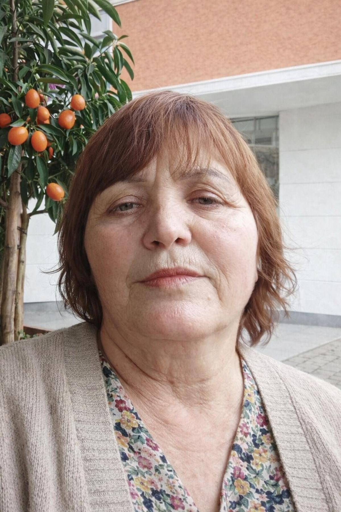

Наш коллектив
Сотрудники Дома культуры

Така Мария Николаевна
Директор

Дюльгер Светлана Ильинична
Художественный руководитель

Данаджи Григорий Константинович
Руководитель оркестра "Duygum"

Чобан Пелагея Степановна
Руководитель фольклорного ансамбля "Sevda"

Орманжи Кирилл Иванович
Аккомпаниатор и руководитель младшей фольклорной группы "Sevda"

Лунгу Александр Маркович
Звукооператор

Тащи Татьяна Дмитриевна
Руководитель танцевального коллектива "Şennik"

Мечкар Татьяна Васильевна
Руководитель вокальной группы "Миллениум"
Кихаял Надежда Дмитриевна
Руководитель художественного кружка "Палитра"

Терзи Елена Васильевна
Музейный работник

Кол Раиса Владимировна
Музейный работник

Калчу Марина Георгиевна
Библиотекарь

Куюжуклу Наталья Александровна
Библиотекарь

Варбан Василий Иванович
Оператор котельной

Терзинов Андрей Петрович
Охранник

Стамат Мария Дмитриевна
Технический персонал

Карайдалы Мария Васильевна
Технический персонал

Пранжу Донна Ильинична
Технический персонал

Гайдарлы Ангелина Харлампьевна
Технический персонал